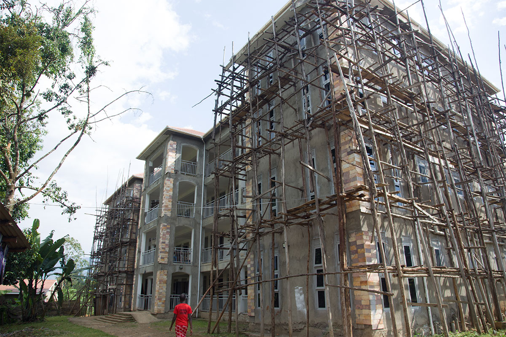
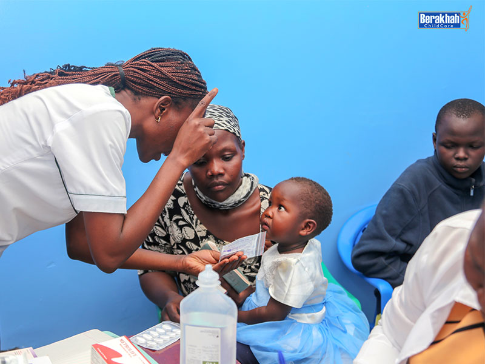
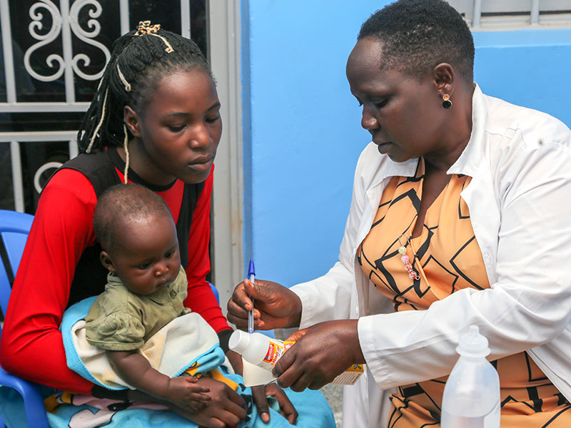
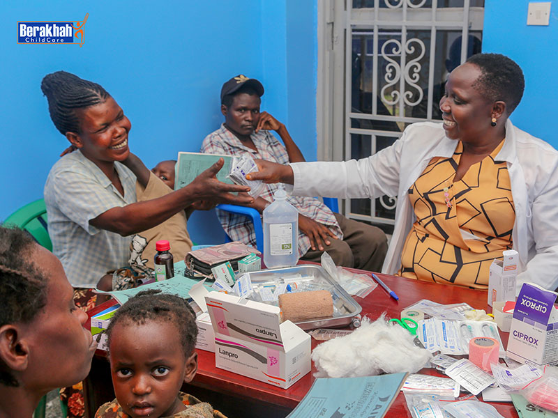
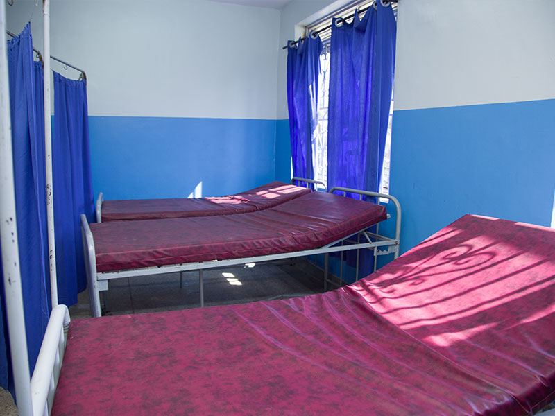
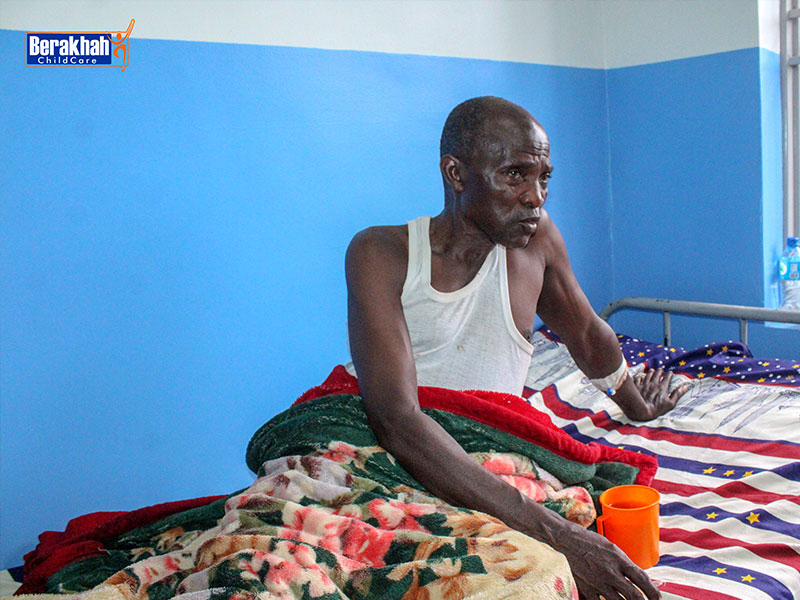

Saving Lives Through Compassionate Healthcare
Every day in Uganda, children, women, and the elderly lose their lives to treatable medical conditions simply because they cannot access timely and affordable healthcare. Minor illnesses often become life-threatening due to the lack of medical facilities, equipment, and trained medical professionals.
Medical care is a core pillar of our mission at Berakhah—restoring hope, dignity, and life to vulnerable communities.
Berakhah Busamaga Medical Hospital
The Berakhah Busamaga Medical Hospital is a transformational healthcare project designed to serve thousands of people in underserved communities across Eastern Uganda.
The hospital building is nearly complete and is poised to become a fully operational, life-saving medical facility once final construction works and equipment installation are completed.

Our Vision
To provide accessible, quality healthcare that:
- Saves lives from preventable and treatable conditions
- Serves children, women, the elderly, and vulnerable families
- Restores dignity and hope through compassionate medical care
Medical Services & Care
General Medical Care
Comprehensive treatment for common illnesses and conditions affecting our communities.
Specialized Treatments
Advanced medical care including surgical interventions for critical conditions.
Patient-Centered Care
Compassionate healthcare tailored for children, women, and the elderly.
Community Outreach
Free medical clinics and healthcare services reaching vulnerable communities.
Our work has already transformed lives through timely medical intervention, restoring health and hope to individuals who would otherwise go untreated.
Medical Care in Action
See the impact of compassionate healthcare in our communities






Why This Hospital Matters
In many rural communities we serve:
Hospitals are distant or inaccessible
Families cannot afford treatment
Simple illnesses turn into emergencies
The Berakhah Hospital bridges this gap by bringing quality healthcare closer to those who need it most.
Current Need: Completing the Hospital
To fully open the hospital and begin serving patients at scale, we are raising USD 250,000 to complete:
Final Construction Works
Electrical Installations
Painting and Finishing
Medical Readiness Setup
Additional Priority Medical Needs
- Ambulance services for emergency response
- Medical equipment and supplies
- Power backup systems to ensure uninterrupted care
Medical Care as Part of Holistic Transformation
Medical care at Berakhah is integrated with:
By addressing both physical and spiritual needs, we pursue holistic transformation for individuals and communities.
Help Us Save Lives
Your support can turn a nearly completed building into a fully functioning hospital that saves lives every day.
Partner with us to bring healing, hope, and dignity to those who need it most.
Other ways to give: PayPal, Venmo, Cash App, Zelle